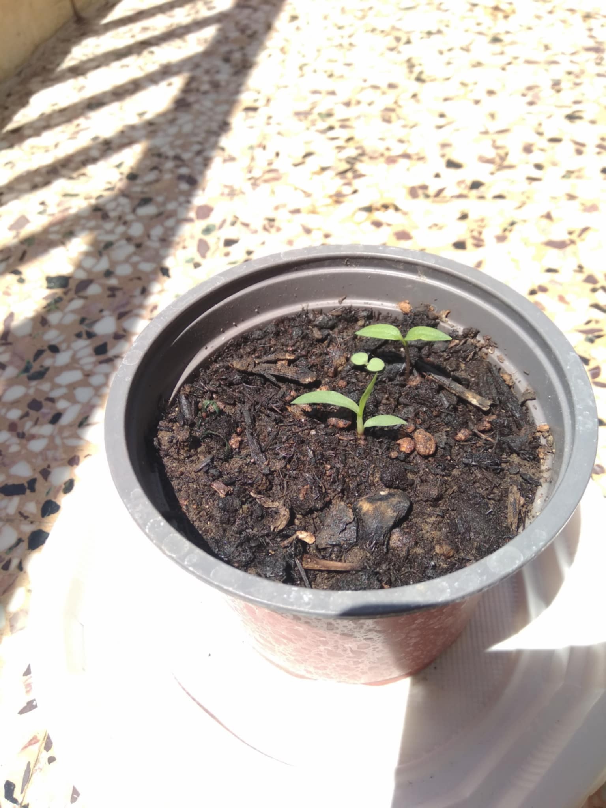

üéâD12~ 01/06/25 (EU format)
üéâüéâSUNNY DAY AT LAST AND EVERYONE IS MAKING A PARTYüéâüéâ
So excited today. I woke up to every sprout having their baby leaves out. Also we can see a second double sprout pot which gives me hope after not seeing anything for 10days.
üå±After some research I decided to not water them daily if not needed(check with finger if soil is dry).
Also I will try to progressively give them more light and not expose these babies to direct sun for the whole day. I mean the first one to grow baby flowers was exposed to it full time and looks fine but then again there were a lot of cloudy days
Nevertheless I read on the internet that it makes the plants stronger so I will start putting them out of the direct sun starting at 10a.m. and progress by adding 1hour of direct sun time every day.


D13~ 02/06/2025
The jalapeno pot that sprouted first is now growing it's first true leaf. I am getting more and more excited.
Today I was supposed to stop their direct sunlight at 10.am but I didn't until 12p.m (2 hours later). The plan is still in place starting tomorrow!!!
The leaves seem normal and healthy.
Let me note that I checked for the soil moisture today and it was not soggy but not dry as well. I decided to skip the watering process today.
üå±Finally making the diary and getting it up online. Currently I make it for github pages but I will improve it and make it more "automatic" as time passes.
I will maybe move to wordpress or something to make it more dynamic as well.
Note to self: take better pictures
TEMPL D1~ 20/05/2025
temptex
temptex
üå±tempdesc